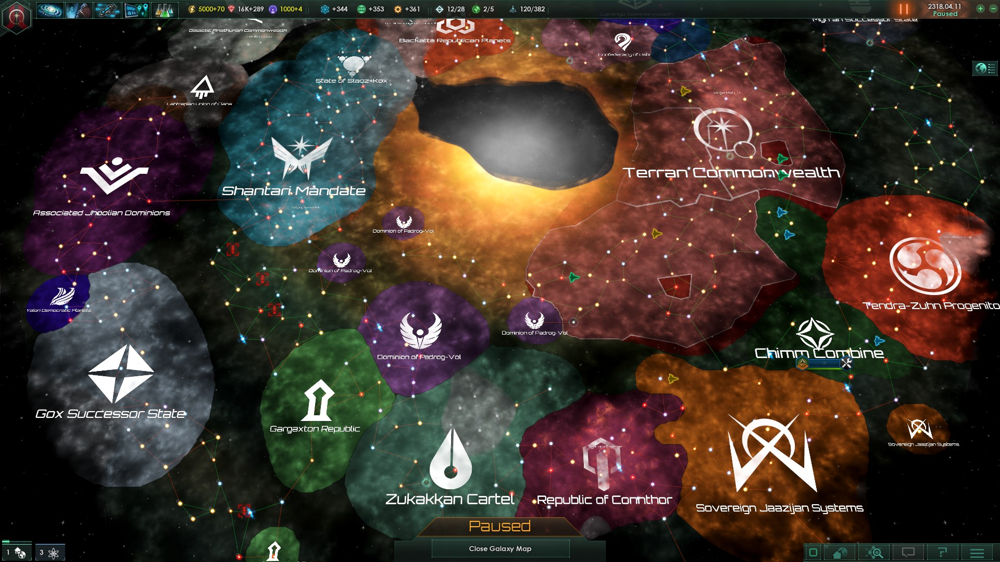
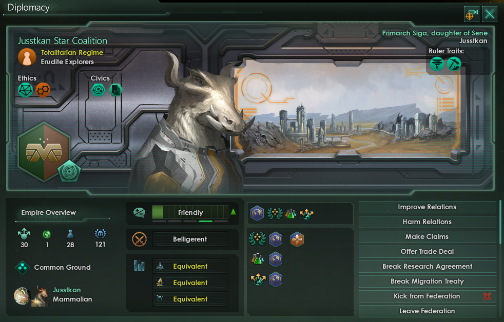
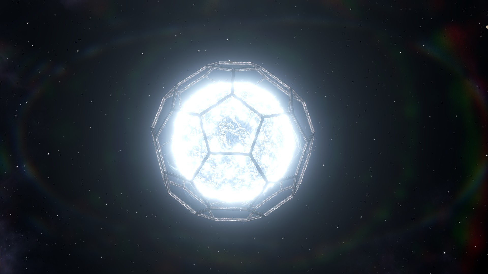

Mécaniques de jeu

Stellaris s'articule autour de cinq grands piliers, chacun formant un sous-système complet :
Exploration
Envoyez des vaisseaux scientifiques cartographier les systèmes voisins. Découvrez des anomalies, des épaves, des ruines de civilisations précurseurs comme les Infinity Machines ou les First League. Certaines anomalies déclenchent des chaînes d'événements narratifs uniques.
Colonisation
Établissez des colonies sur des planètes habitables. Gérez la population (Pops), construisez des districts et des bâtiments, assignez des emplois. Chaque planète possède des ressources et une habitabilité propres à votre espèce.
Diplomatie
Forgez des fédérations, déclarez des guerres saintes, signez des traités commerciaux. L'opinion des autres empires dépend de vos éthiques, de vos actions passées et de vos civiques. Le Conseil Galactique permet de voter des résolutions affectant l'ensemble de la galaxie.
Recherche
Trois arbres technologiques (Physique, Société et Ingénierie) évoluent par tirage aléatoire pondéré. Des technologies rares peuvent débloquer des voies d'ascension ou des structures mégalithiques comme les Sphères de Dyson.
Combat Spatial
Concevez vos flottes en choisissant coques, armes, boucliers et ordinateurs de combat. Les batailles se jouent automatiquement selon vos configurations. Les Titans et les Colosses (planète-destructeurs) représentent l'apex de la puissance militaire.
Gestion Interne
Équilibrez les ressources (énergie, minéraux, nourriture, influence, unité), gérez le bonheur des factions politiques, nommez vos dirigeants au Conseil et assurez la stabilité de vos planètes pour maximiser leur rendement.
Le loop de jeu : Début de partie → Exploration agressive → Colonisation des meilleures planètes → Montée en puissance technologique → Ascension de votre espèce → Faire face aux crises de fin de partie. Une partie peut durer plus de 10 heures.
Créer son Empire

La création de civilisation est l'une des étapes les plus riches du jeu. Chaque combinaison produit un style de jeu radicalement différent.
Espèces ; Traits
Choisissez parmi 9 classes de morphologie (Mammifères, Reptiliens, Insectoïdes, Aviaires, Mollusques, Arthropodes, Fongoïdes, Lithoides, Aquatiques…) et attribuez des traits biologiques qui influencent la production, la croissance ou l'habitabilité. Ex : Adaptatif (+10 % habitabilité), Intelligent (+10 % recherche), Xénophile.
Éthiques
Chaque empire possède 3 points d'éthique à répartir parmi : Matérialiste / Spiritualiste, Autoritaire / Égalitaire, Militariste / Pacifiste, Xénophobe / Xénophile. Adopter une étique en Fanatique coûte 2 points mais octroie des bonus doublés. Les éthiques déterminent les civiques disponibles et la stabilité des factions internes.
Autorités
- Démocratie: élections régulières, bonus de recherche
- Oligarchie: dirigeants plus puissants, influence accrue
- Monarchie: lignée dynastique, stabilité politique
- Empire de Ruche: une seule conscience, pas de factions
- Intelligence de Machine: robots autonomes, pas de nourriture
- Mégacorporation: filiales commerciales galactiques
Origines
L'Origine définit l'histoire de départ de votre civilisation et modifie considérablement la situation initiale. Exemples notables :
- Unification Prospère: départ classique équilibré
- Éveil Galactique: commencer comme empire spiritualiste avancé
- Armée de Clones: espèce clonée avec traits uniques
- Necrophage: absorber les pops étrangères dans sa propre espèce
- Sur les Épaules des Géants: hériter d'une technologie précurseur
- Aquatique: bonus sur planètes océaniques, pénalité ailleurs
Voies d'Ascension

En milieu de partie, votre empire peut choisir une voie d'ascension qui transforme radicalement votre espèce et ouvre des technologies et événements exclusifs. Il faut choisir, les voies étant mutuellement exclusives.
Ascension Biologique
Maîtrisez la génétique pour remodeler votre espèce. Ajoutez des super-traits (Érudit, Pré-adaptatif), éliminez les faiblesses, clonez vos populations à volonté. Idéale pour les empires expansionnistes qui veulent maximiser leur nombre de Pops.
Ascension Synthétique
Transférez la conscience de votre espèce dans des corps robotiques immortels. Aucune habitabilité requise, aucun vieillissement des dirigeants, production maximisée. La voie la plus puissante en fin de partie, mais qui requiert un long investissement technologique.
Ascension Psionique
Éveillez les capacités télépathiques de votre espèce. Accédez au Voile, une dimension alternative peuplée d'entités puissantes qui peuvent vous accorder des pactes, mais à un prix. Débloquez les boucliers psioniques et les propulseurs dimensionnels. Chemin haut-risque / haut-rendement.
Ascension Cybernétique
Augmentez biologiquement votre espèce avec des implants cybernétiques. Compromis entre biologique et synthétique : vos pops restent organiques tout en gagnant des bonus de production solides. Accessible tôt et offre d'excellentes performances économiques.
Mégastructures : L'ascension permet aussi de construire des structures colossales: Anneau-monde (planète artificielle circulaire), Sphère de Dyson (enveloppe complète d'une étoile), Forge Stellaire, Portail vers le Nexus. Ces projets prennent des décennies et confèrent un avantage décisif.